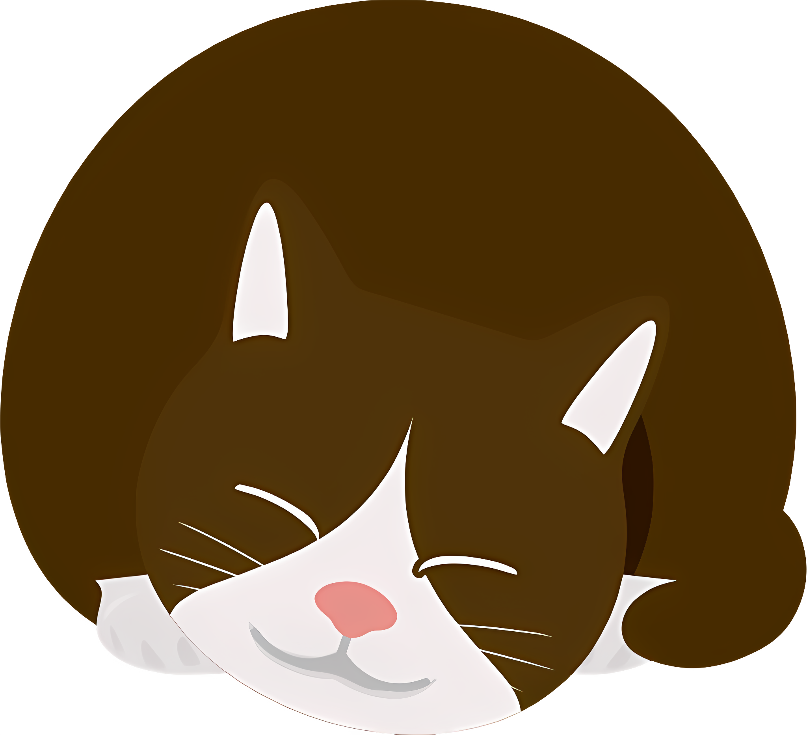

Our Services
Dogs
- - Bathing and Drying (65$): Includes shampooing, conditioning, and drying. 1 - 2 hours
- - Haircut and Styling (60$): Customized cuts based on breed and owner preferences. 1.5 - 3 hours
- - Nail Trimming (10$): Regular trimming to maintain healthy nails. 15 - 30 minutes
- - Ear Cleaning (10$): Removing dirt and wax buildup. 10 - 15 minutes
- - Teeth Brushing (10$): Maintaining oral hygiene. 10 - 15 minutes
- - Anal Gland Expression (10$): Ensuring comfort and preventing infections. 10 - 15 minutes
- - De-shedding Treatments (30$): Reducing shedding and maintaining coat health. 1 - 2 hours
- - Paw Pad Care (10$): Trimming fur and moisturizing paw pads. 15 - 30 minutes
Cats
- - Bathing and Drying (50$): Gentle shampooing and drying. 1 - 2 hours
- - Haircut and Styling (85$): Especially for long-haired breeds. 1 - 2 hours
- - Nail Clipping (20$): Regular trimming to prevent overgrowth. 15 - 30 minutes
- - Ear Cleaning (10$): Removing dirt and wax buildup. 10 - 15 minutes
- - Teeth Brushing (10$): Maintaining oral hygiene. 10 - 15 minutes
- - De-shedding Treatments (35$): Reducing shedding and preventing matting. 1 - 2 hours
- - Sanitary Trim (40$): Trimming fur around sensitive areas for hygiene. 30 - 60 minutes
- - Paw Pad Care (10$): Trimming fur and moisturizing paw pads. 15 - 30 minutes
